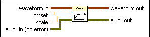

Waveform Scale and Offset VI
Owning Palette: Analog Waveform VIs and Functions
Requires: Base Development System
Scales the waveform data using the equation waveform out = (scale * waveform in + offset).

 Add to the block diagram Add to the block diagram |
 Find on the palette Find on the palette |